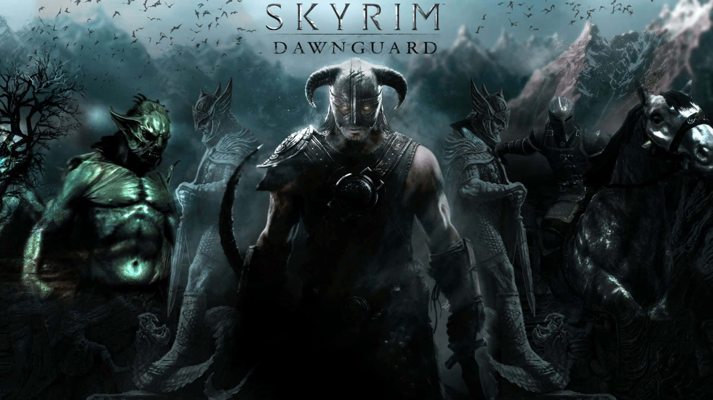
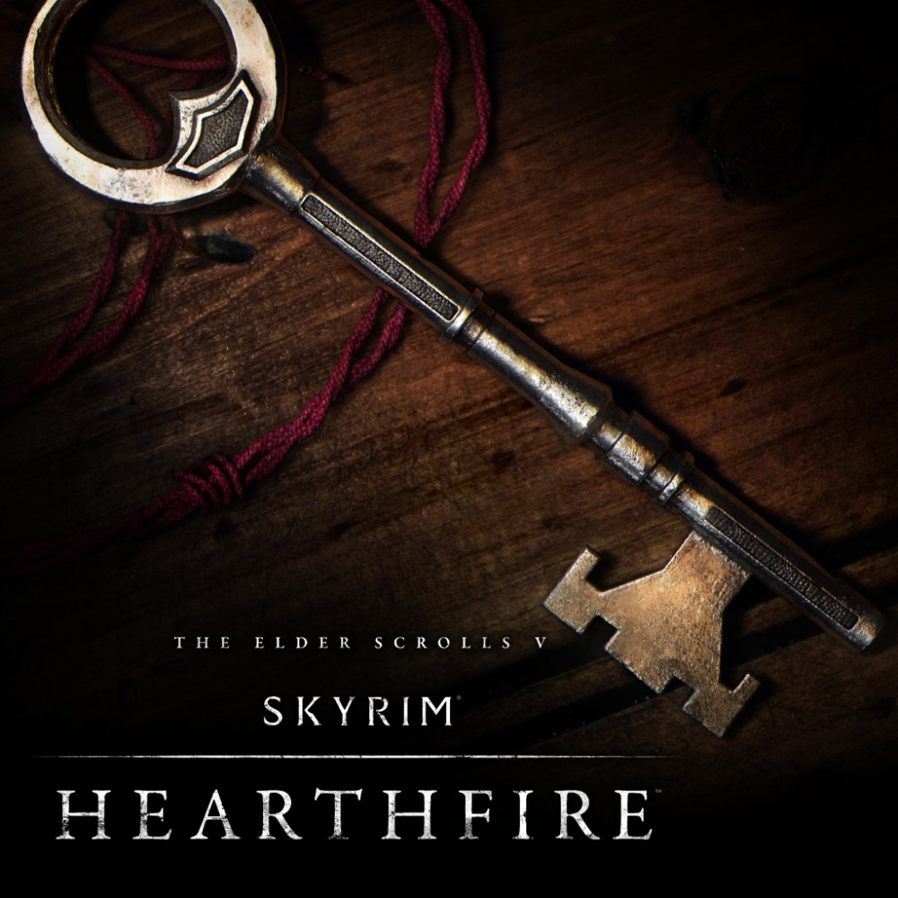
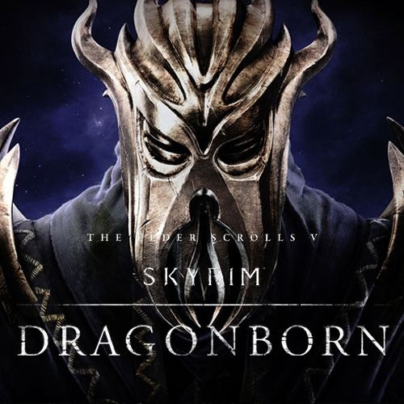
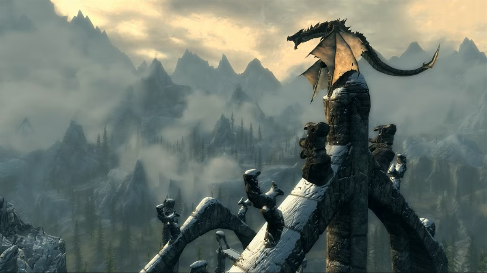
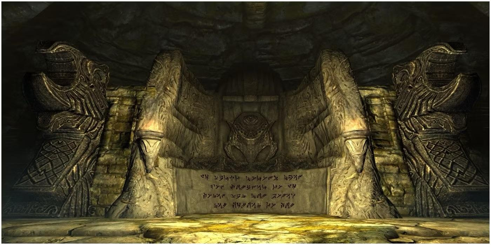
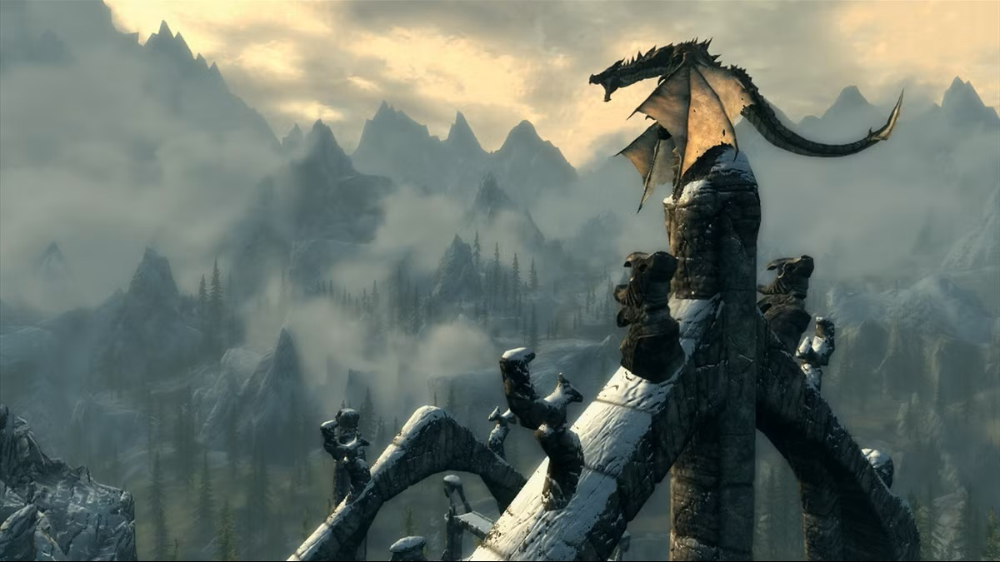
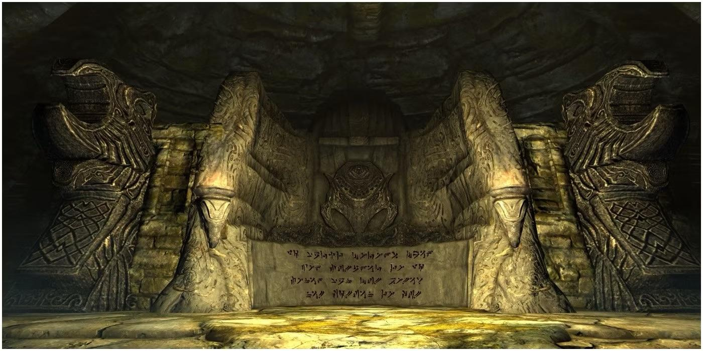

Official DLCs
Dawnguard
Dawnguard introduces a dark conflict between the ancient order of vampire hunters and the powerful Vampire Lord Harkon. With new weapons, crossbows, and the ability to become a Vampire Lord yourself, this DLC adds depth and danger to Skyrim’s world.
Hearthfire
Hearthfire shifts the focus from battle to homebuilding. Design your own homestead, adopt children, hire stewards, and create a peaceful life in the harsh lands of Skyrim. It’s a quiet but beloved addition to the game.
Dragonborn
Dragonborn takes you to the island of Solstheim, where ancient magic and ash-covered landscapes await. Face Miraak, the first Dragonborn, and uncover secrets tied to the very power of the Thu’um.
Skyrim Editions
Original Edition (2011)
The original release of The Elder Scrolls V: Skyrim launched in 2011 and became an instant classic. It introduced the vast open world of Skyrim, the Dragonborn storyline, and countless quests, dungeons, and characters that defined a generation of RPGs.
Legendary Edition (2013)
The Legendary Edition bundled the base game with all three DLCs — Dawnguard, Hearthfire, and Dragonborn — along with all gameplay updates. It became the definitive version for last‑gen consoles.
Special Edition (2016)
The Special Edition brought Skyrim to modern hardware with enhanced graphics, improved lighting, volumetric god rays, and upgraded performance. It also introduced mod support on consoles for the first time.
VR Edition (2017)
Skyrim VR offered a fully immersive version of the game, allowing players to explore Tamriel in virtual reality. It included the base game and all DLCs, redesigned for VR controls and movement.
Nintendo Switch Edition (2017)
The Switch Edition brought Skyrim to a portable console for the first time. It included motion controls, Amiibo support, and exclusive items inspired by The Legend of Zelda.
Anniversary Edition (2021)
The Anniversary Edition celebrated Skyrim’s 10th anniversary. It included the Special Edition plus over 500 pieces of Creation Club content — new quests, weapons, armor, spells, fishing, survival mode, and more.
Ultimate Modded Experience (Community)
While not an official edition, the modding community has created massive overhauls like Skyrim Together Reborn, Requiem, Skyblivion, and Skywind, keeping the game alive and evolving more than a decade later.
Scenic Gallery
 


